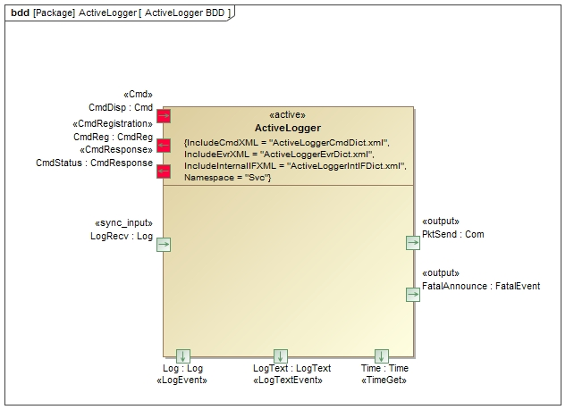

|
F´ Flight Software - C/C++ Documentation
Latest
A framework for building embedded system applications to NASA flight quality standards.
|
|
F´ Flight Software - C/C++ Documentation
Latest
A framework for building embedded system applications to NASA flight quality standards.
|
The Svc::ActiveLogger component processes events from other components. The events are put in packets and sent to an external component like the ground interface. The component provides event filtering capability such that events may be turned off via ID or severity.
The requirements for Svc::ActiveLogger are as follows:
Requirement | Description | Verification Method --------— | --------— | ----------------— AL-001 | The Svc::ActiveLogger component shall receive events and compose ter events based on event severity. | Unithem into downlink packets. | Inspection; Unit Test AL-002 | The Svc::ActiveLogger component shall have commands to filt Test AL-003 | The Svc::ActiveLogger component shall have commands to filter events based on the event ID. | Unit Test AL-004 | The Svc::ActiveLogger component shall call fatalOut port when FATAL is received | Inspection; Unit Test
The Svc::ActiveLogger component has the following component diagram:

The Svc::ActiveLogger component uses the following port types:
| Port Data Type | Name | Direction | Kind | Usage |
|---|---|---|---|---|
Fw::Log | LogRecv | Input | Synchronous | Receive events from components |
Fw::Com | PktSend | Output | n/a | Send event packets to external user |
Svc::FatalEvent | FatalAnnounce | Output | n/a | Send FATAL event (to health) |
The Svc::ActiveLogger component provides an event logging function for the software. The framework autocoder allows developers to specify a set of events in the component XML (see Events). For these components, the autocoder will add an Fw::Log output port to send events in serialized form. The ActiveLogger receives these port calls and provides commands to filter these events. The filtered events are sent to other components such as the ground interface.
Note: the Event ID value 0 is reserved for the logger.
Should a FATAL severity event arrive, it is announced using a FATAL out port allow the system to respond when a FATAL event is seen.
The Svc::ActiveLogger LogRecv input port handler filters events to lessen the load on the downstream components. The filters can be set by severity and ID. By default, the DIAGNOSTIC events are filtered out since the number of DIAGNOSTIC events can be quite high. All defaults can be globally configured in config/ActiveLoggerImplCfg.hpp. Filters are modified at runtime by the SET_EVENT_FILTER command.
The component also allows filtering events by event ID. There is a configuration parameter that sets the number of IDs that can be filtered. This allows operators to mute a particular event that might be flooding the downstream components. These filters are modified at runtime by the SET_ID_FILTER command.
FATAL events are never filtered, so they can be caught and broadcast to the system. Outgoing events are converted into the F´ ground format and sent out using the PktSend port.
When the ActiveLogger component receives a FATAL event, it calls the FatalAnnounce port. Another component that handles the system response to FATALs (such as resetting the system) can connect to this port to be informed when a FATAL has occurred.
The Svc::ActiveLogger component accepts events from other components.
Svc::ActiveLogger has no state machines, but stores the state of the event severity and event ID filters.
Svc::ActiveLogger has no significant algorithms.
TBD
| Document | Link |
|---|---|
| Design Checklist | Link |
| Code Checklist | Link |
| Unit Test Checklist | Link |
To see unit test coverage run fprime-util check –coverage
| Date | Description |
|---|---|
| 6/25/2015 | Design review edits |
| 7/22/2015 | Design review actions |
| 9/7/2015 | Unit Test updates |
| 10/28/2015 | Added FATAL announce port |
| 12/1/2020 | Removed event buffers and post-filter |